Народна архітектура українського Полісся

Народна архітектура - це своєрідна галузь культури народу, яка твориться не індивідуальним талантом професіонального архітектора згідно усталених стилістичних напрямків, а народними майстрами згідно традиційних світоглядних уявлень. Вони передаються від покоління до покоління у вигляді засобів творення споруд, функціонально необхідних для життєдіяльності. Штучно створений людиною мікросвіт цих споруд (на противагу зовнішньому природному макросвіту) формувався з урахуванням гармонійного поєднання елементів використання екологічних можливостей навколишнього середовища, особливо його природних ресурсів. Його життєздатність стверджувалася традицією, спадкоємними обрядово-ритуальними діями та конструктивними прийомами спорудження, опорядження, освячення та обживання.
Небезпека непізнаної, непідвладної людині, отже - ворожої стихії нейтралізувалася реальними та магічними діями, ритуалізованою системою обрядів. Свідченням цього є розвинута система обрядовості у традиціях поліщуків, пов'язана з вибором матеріалу, місцем і часом зведення споруди, її опорядження та обживання.
На етнічній карті України Полісся окреслене як своєрідний літопис її прадавньої народної дерев'яної архітектури. Ліс був присутній скрізь, він визначав навколишній простір та пейзаж, надихав поетичну душу поліщуків, спонукав використовувати свої безмежні можливості. Завдяки майстерному вмінню поліщуків освоювати лісові багатства краю, співіснувати в гармонії з рідною природою, постала архітектура Полісся. Вона є втіленням казкової поетичності архітектурних старожитностей, їхньої таємничості і монументальності. Спілкуючись з деревом, як із живою істотою, поліщуки уникали насилля над ним і намагались максимально використовувати будь-які його природні форми. Так, наприклад, розгалуження стовбурів надавалося для виготовлення стовпів "сох"; гакоподібну сучкуватість стовбура або його прикореневі відгалуження пристосовували як опорні елементи "какошниць", "куриць" для утримання дерев'яних елементів покриття "плах", "драниць" у влаштуванні архаїчних типів даху "закотом".
Народна традиція забороняла вирубування лісу у період його росту, тому рубали головним чином взимку, "коли дерево мертве". Встановлення опор "пнів" під стіни у неприродному положенні корінням вгору також було заборонено. Небажаним вважалося зведення нової споруди на місці зрубаного плодового дерева, оскільки це могло спричинити смерть дітей господаря майбутньої будівлі. Існували заборони і на вибір місця під нову споруду: поліщуки уникали "нечистих місць" (перехрестя доріг, стежок, руйновищ, де лишались старі "печища", місць загибелі або несподіваної смерті когось), де, згідно з традиційними уявленнями, ховалась нечиста сила, яка могла зашкодити майбутнім мешканцям.
Як виправдання-компенсацію за вчинений забудовником збиток (вирубування дерев, вилучення певної земельної ділянки), який міг спричинити смерть будівничих або господарів, поліщуки приносили духам природи своєрідну "будівельну жертву". Здебільшого це був "заклад" у вигляді хлібного зерна або шматків спеченого хліба, овечої вовни чи кількох монет. Ці "дари" вкладали у хрестоподібне заглиблення у кутовому з'єднанні перших вінців зрубу "підвалин" з метою захисту їх від можливого проникнення несприятливих, ворожих сил. Крім будівельної жертви предметами, поліщуки донедавна в окремих випадках приносили в жертву півня, кров'ю якого освячували підвалини. Таким чином підвалину (основу споруди) намагались оберегти від можливих шкідливих впливів. Вона повинна була залишатись цільною (не втратити жодної тріски) та неушкодженою (заборонялось грюкати по ній сокирою).
Намагаючись прихилити до себе життєдайну силу сонця, яка сприяла зростанню, примноженню добробуту, родючості, благополуччю, поліщуки кожний з етапів зведення нової споруди приурочували до моменту, коли сонце сходило ("росло", "прибувало"). А закінчували, коли воно заходило ("зменшувалось, починало йти на спад"). На схід орієнтували найсвятіший кут хати - "покуть"; до сходу, у напрямку покуті, клали найміцніший, найтовстіший кінець ("коренчак") стовбура першого вінця зрубної стіни "підвалини". При вивершенні даху ритуально-знакове деревце "вільце", "квітку" чіпляли також на крайні від сходу пари "лобових", "застольних" крокв.
При типологічній єдності північноукраїнського Поліського житлового комплексу на території його поширення виділялось декілька варіантів: два правобережних - центральний (києво-житомирський) та західний (волинський) і лівобережний - східний (чернігово-сіверський).
Центральне (києво-житомирське) Полісся
Найбільша збереженість правічних реліктових архітектурних форм практично до початку ХХ ст. спостерігалася у народній архітектурі центрального Полісся.
Саме тут найдовше збереглися прадавні одноподільні хати "рублені кліті" та архаїчні засоби захисту входу. Простір між хатою, об'єднаний дахом з окремо поставленою від неї на відстані коморою, набував вигляду тристінного піддашшя, виявляючи тим самим один з найдавніших етапів виникнення триподільної житлової споруди. У ній цей простір між хатою і коморою перетворювався вже на оточене стінами закрите вхідне приміщення - "сіни". Завдяки збереженню давніх засобів поєднання ряду окремих приміщень-клітей в однорядно збудованій споруді, силует центральнополіського житла набув видовженої форми та об'єднаних між собою різновисотних будівель, притулених суміжно одна до одної. Це створювало враження, що хати "...наче пароплави, що по зелених пагорбах пливуть".
Характерною центральнополіською ознакою було влаштування в сінях своєрідного теплого приміщення, т. зв. "стебки". Її обігрівали в холодну пору року розжареним вугіллям, яке вносили з хати. Стебка, як виділена в сінях чи окремо розташована споруда, була призначена для зберігання коренеплодів та їстівних припасів, замінювала в умовах стояння високих грунтових вод традиційні для всіх інших земель України льохи. Місцевим варіантом слід вважати засіб перетворення сіней у двоподільному житлі на тепле, опалюване піччю, друге житлове приміщення ("прихаток", "теплуху", "хатину", "кухню"), вхід до якого був знадвору. В умовах болотяного та зволоженого грунту нижній вінець стін ("підвалина") укладалась на вертикальні опори з дерев'яних пнів чи колод ("палі", "ковтки", "кітвиці", "подки", "штампелі", "штандари"). Майже до початку ХХ ст. стіни зрубного житла тут укладали з круглого дерева ("кругляків") або розколеного на дві половини ("обаполів", "плиниць"). Для оформлення зрубних стін уживалося багато способів виявлення як природних можливостей лісоматеріалу, його обробки у вигляді дво-, чотири-, п'яти- і шестикантової огранки, так і оздоблення їх побілкою по чистому зрубу або по попередньо нанесеному на зруб шару глиняної чи глиносолом'яної обмазки. Своєрідними були види побілки лише навколо вікон, а також обведення контуром побіленої навколо вікон площі одним чи двома рядами білих крапок, що створювало враження "орнаментального" оформлення і сприяло зоровому ефекту збільшення віконних отворів.
Архітектура центральнополіських споруд виділялась розмаїттям конструктивних варіантів виведення дахів: від архаїчних стовпових "на сохах, "на півсішках", "на дідках", "на чепілках", "на козлах" та "півсошних"; рублених "наметово - пірамідальних" та "накотом", "на перекладах", "на самцях" по рублених фронтонах причілкових стін до поширених по всій Україні кроквяних конструкцій. На тлі переважання двосхилої форми даху "у щитках", "з пошевками" популярними були також варіанти переходових (від двосхилої до чотирисхилої) форм: з фронтоном, усіченим знизу ("з капіжем", "з причолком", "з начолком") та з фронтоном, усіченим зверху, а також і чотирисхила форма. Дерево служило і покрівельним матеріалом у вигляді колотих або пиляних "плах", "драниць", щепи, стружки. Збереглось також покриття господарських споруд землею. Із зменшенням кількості деревини за покрівельний матеріал в кінці ХІХ - на початку ХХ ст. почали використовувати солому.
У рамках загальноукраїнської традиції розташування печі в кутку біля вхідних дверей, поличок відкритої шафи - "мисничка" в протилежному кутку біля входу, лави попід вікнами чільної стіни, а спального місця "полу" безпосередньо біля печі вздовж задньої стіни з колискою над ним, інтер'єр передбачав також цілий ряд архаїчних пристроїв та монументально-нерухомих елементів. Своєрідного вигляду центральнополіському житлу надавали форми стелі ("горбатої", "трикутньої", "трапецієвидної", "півкруглої", "аркуватої", "на перекладах", "на слижах"), у яких збереглися давні способи поєднання її з дахом у конструктивну цілість.
У житлі цього району аж до початку ХХ ст. збереглися також і прадавні форми "волокових вікон", вирубаних вздовж одного вінця стіни віконних отворів, що закривались зсередини хати дерев'яною дошкою ("заслонкою"), "заволокуючи" віконний отвір. Двері до житлових та господарських споруд з архаїчною конструкцією обертання "на бігунах", зроблених з 1-2-х тесаних дощок також належать до реліктових форм.
Для штучного освітлення хати поліщуки донедавна використовували світло від палаючих "скалок", "скіпок", над якими спускали із стелі характерної форми димовивідний пристрій - "лучник". Стінки його були розширені донизу, виготовлені з кадуба або виплетені з дубців коша і обмазані глиною.
Лучники на літній період знімали або піднімали і кріпили до стелі, а на осінньо-зимовий період коротких світлових днів знову спускали. Момент спускання лучника - появи його в хаті - освячувався обрядодіями. Господиня, запросивши дітей, обдаровувала їх солодощами та насінням, а на самий низ комина одягала сплетений "осінній вінок". Цей обряд "женити комина" ритуально стверджував дозвіл світити лучиною і забезпечував знешкодження можливого проникнення через лучник в хату шкідливих сил.
Увесь простір хати був чітко поділений на функціонально призначені місця. Найвизначніша роль належала південно-східному кутку хати - "покуті", "святому куту", "червоному куту". Тут влаштовували домашній вівтар - ставили стіл та домашній іконостас - над столом на причілковій та чільній стінах кріпили ікони або їх виставляли на спеціальних поличках, якщо хата не була курною.
Перед образами завжди вішали лампадку з гутного скла місцевого виробу або ставили у металевих свічниках запалені свічки. Для обрамлення образів виготовлялись спеціальні рушники - "божники". Вони вишивались не лише на кінцях, як скрізь в Україні, а й по всій довжині рушника з того боку, який мав обрамляти ікони: пишно вишиті широкі смуги по кінцях з'єднувались тонкою смугою вишивки вздовж рушника. Стіл застеляли домотканим полотном ("стільником", "обрусом") або у свята й килимом. Як символ достатку, родини на столі завжди клали хліб, ставили сіль у сільничці та клали ножа.
Поліська піч мала зрубну основу ("опіччя") та пічний стовп та зрубним припічком. Піч і простір біля печі були повністю підвладні жінці - "охоронниці домашнього вогнища", ритуальне значення якого ще на початку ХХ ст. фіксувалось у традиційній обрядовості поліщуків (сімейних та календарних обрядах, звичаях і повір'ях). У чільну та причілкову стіни зарубувались або укладались на дерев'яні стовпці - "торчі", закопані в глиняну долівку, грубо обтесані дошки лав. Угорі над вікнами зарубували полицю, на якій виставляли святковий посуд з кераміки та скла. Уздовж причілкової стіни між столом та "полом" ставили скриню. Біля дверей в кутку влаштовували шафу - "мисник" для ужиткового та обрядово-святкового посуду.
Закіптюжені курною піччю чорно-сріблясті стіни нічим не прикрашались. З характером курної печі та освітленням лучником добре гармоніював темний ("димлений", "сивий") керамічний посуд - "горщики", "гладущики", "глечики". Усі дерев'яні ужиткові речі (меблі, посуд, знаряддя праці) мали риси архаїчної простоти, виявляли природні якості дерева - форму, текстуру, колір, пластичність. У хаті з виводом диму поза її межі гордістю кожної господині були святкові глиняні та дерев'яні розписні тарелі, різнокольорові вироби з гутного скла (баклаги, барильця, чарки, сулії, келихи) та фігурні посудини у вигляді ведмедиків, баранчиків. Сонячні промені висвічували сліпучо-білі, блакитні, жовто-бурштинові чи медово-коричневі відблиски на скляних виробах у миснику, вияскравлювали сріблясто-орнаментовану поверхню сивої димленої кераміки та життєрадісні багатобарвні розписи мальованих тарілок.
Поліські майстри досить стримано оздоблювали виїмчастим різьбленням дошки мисника, іноді прикрашали дверцята та профільоване завершення інкрустацією з соломи. Декоративні властивості мисника на тлі темних зрубних стін надавали інтер'єрові поліської хати урочисто-святкової тональності. Біля дверей, при миснику, вішали профільовану різьблену поличку з отворами ("ложичник") для дерев'яних ложок. Ручка ложки кожного з членів родини позначалась своєрідним знаком - різьбленим або випаленим. Ложичник з ложками був своєрідною візиткою родини, він засвідчував кількість її членів та соціальний статус кожного з них.
Цей район Полісся виділяла також і форма забудови садиби як однорядними "довгими" хатами, так і дворядними, коли однорядний комплекс з'єднаних між собою господарських споруд розташовувався паралельно до хати з прихатніми спорудами. Доволі поширеною була і вільна забудова незв'язаними між собою, окремо розташованими спорудами. У комплексі господарських будівель двору популярними були споруди для зберігання сіна: припідняті над рівнем землі дерев'яні настили ("обороги на поді", "на одрині"); для корнеплодів та їстівних припасів ("стебки", "кліті"); для зберігання зерна в снопах ("багатокутні клуні", "токи" з пірамідальним рубленим верхом).
Західне (волинське) Полісся. Територія цього варіанту поліської архітектури виходить за межі сучасного адміністративно-державного кордону Волинської області України з Польщею, поширюючись на землі Любельського Полісся (Підляшшя) та Забужжя (Холмщину). Пам'ятки західно-поліської народної архітектури засвідчують новішу історичну фазу, яка почалась у другій половині ХІХ ст. після звільнення селян від кріпацтва. Для будівництва зрубів почали використовувати тесане і різане дерево на дубових підвалинах. Усе більшого поширення набувають дво- та трикамерні хати з досить великим приміщенням сіней. Своєрідно вирішується об'єднання житлової споруди з господарськими приміщеннями: вони приєднуються суміжно до задньої стіни хати, збільшують її ширину, створюючи другий ряд, що покривається спуском даху хати. Такі прибудови ("прибік", "пукліт", "тепла комора", "істебка") є своєрідним варіантом центральнополіської стебки, оскільки утеплюються аналогічно. У західнополіському варіанті спостерігаємо житла з прибудованим також уздовж задньої стіни хати "двірцем", який складався з трьох частин: пукліта, задвірка і комірчини. Варіант плану довгої хати представляють тут споруди, в яких суміжно до причілкової "покутньої" стіни прибудовується господарське приміщення для зберігання сільськогосподарського реманенту та засобів транспорту - "колешню". Поширився тут і "володавський" варіант хат, у яких вхід у сіни розташовували при краю причілкової стіни і захищали його піддашшям. За невеликим винятком, зруби хат білились, а на стіни комор та сіней іноді наносили шар глини, як і на підвалини та віконні наличники. Із збільшенням розмірів вікон для їхнього захисту від опадів почали набивати наличники.
Наличники та верхні фронтончики над ними народні майстри намагались оздоблювати нескладним різьбленим або накладним орнаментальним узором. У традиційному поліському вирішенні інтер'єру волинське житло зберегло таку давню форму печі, де за опіччя правили дерев'яні опори у вигляді полозів саней. Житло цього варіанту мало горизонтальну стелю, яка підтримувалась поздовжньою балкою - "сволоком". Особливо виразно специфіка західного варіанту проявлялась у формах забудови садиб. Тут майже до 50-х років ХХ ст. дожила периметральна замкнена забудова, а також її переходові форми, коли комплекс господарських споруд у вигляді периметральної або П-подібної забудови відділявся від "чистого" двору, який формувався з допоміжних прихатніх будівель та земельної площі при них - т.зв. "двір з підварком".
Східне (чернігово-сіверське) Полісся
Східне ( чернігово-сіверське) Полісся. Архітектура народного житла цього району майже не зберегла реліктових форм. Планове вирішення житла виділяється поздовжнім переділом хати шляхом прибудови до печі видовженої груби і облаштуванням між піччю та грубою вхідного отвору. Форма самої печі із стоячим на припічку комином відрізняється від правобережної, у якої комин підвісний. Перед сіньми прибудовували накритий дашком ґанок, який підтримувався точеними стовпчиками. Зрубні стіни, як і у волинському варіанті, виводились з тесаного і пиляного дерева. В їх оформленні переважала побілка та промазка швів глиною з наступною побілкою. Підвалини, на відміну від правобережних типів, укладались просто на землю або на низькі стояки. Стіни в межах житлової споруди могли об'єднувати декілька конструктивних варіантів: хата в зруб, сіни та комора в каркасно-дильовані. Горизонтальну стелю підтримували поперечні сволоки. Найпоширенішою формою був чотирисхилий дах, для покриття якого використовували різноманітні способи укладання соломи: зв'язаними та розстеленими сніпками, розтрушеною та м'ятою, прилитою глиняним розчином. Способи вивершування солом'яних стріх теж були різними. Але найбільшу виразність східному варіанту надавали специфічні господарські споруди, такі як "клуні з осеттю" (типу російського овина), бані для підсушки льону та конопель, одноповерхові "стовпові вітряки". Двір формувався переважно з окремих споруд. І лише у селах, що прилягали до прикордонних торговельних шляхів, будували замкнені комплекси - "заїзди".
Самобутньою є також дерев'яна культова архітектура Полісся. У композиційних засобах та способах її будівництва яскраво виявляються традиції архітектури народного поліського житла. Квадратна зрубна "кліть" і восьмигранник становлять основу її обсягово-конструктивних одиниць.
Поліська монументальна архітектура зафіксувала початковий етап еволюції української церковної споруди від давньої рубленої кліті до тридільної прямокутної або хрестової в плані церкви з розвиненим верхом, переважно тризрубної в плані з домінуючою центральною частиною, яку вінчає восьмигранний низький барабан під шатровим покриттям. Поліські церкви різняться лише висотою зрубів, під дво- або чотирисхилим дахом, покритим драницями. Пірамідальні верхи зберігались в архітектурі поліських храмів до кінця ХVII ст. Їх заступили верхи з восьмигранним барабаном на квадратному зрубі ("восьмерик на четверику"), коли чотирисхилий дах за допомогою залому переходить у восьмерик, а проміжки між кутами в основі залому перекриваються скісними елементами. Приземкуватий восьмигранний барабан, наче заглиблений у двосхилий дах, є характерною особливістю поліської церковної архітектури. Максимальну увагу народні зодчі приділяли формі верхів, які видозмінилися від простого двосхилого даху хатнього типу через чотирисхилий з одним заломом до "восьмерика на четверику". Поліські церкви здебільшого присадкуваті, з низьким барабаном. Це монолітний об'єм з чергуванням вертикальних і горизонтальних ритмів та виразним верхом ступінчастої градації. Скромне декорування обмежене різьбленими елементами віконних рам та карнизів. Значного руйнування зазнала храмова архітектура Полісся внаслідок заборони Російського синоду 1801 року будувати церкви в українському стилі. Найдавніші церкви оголошувались "ветхими" і перебудовувались у псевдоруському стилі. Внаслідок таких перебудов і новобудов практично були знищені пам'ятки дерев'яної народної сакральної архітектури Полісся.
І все ж невибагливо-стримана, але неповторна у своїй монументально-прадавній довершеності архітектура Полісся переконливо стверджує опоетизовану Ліною Костенко істину: "... хоч там нема того, що є деінде, зате є те, чого нема ніде".
Т.Косміна,
кандидат історичних наук
1. Круподерка, Кінний млин. МНАПУ. с. Пирогів.
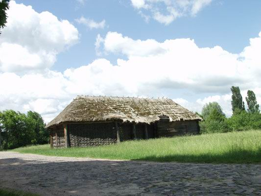
2. Хата. Кінець ХІХ ст. с.Мамекине Чернігівської обл. МНАПУ. с. Пирогів.
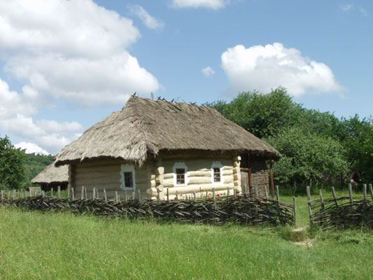
3. Клуня. Початок ХХ ст. с. Карацювин Чернігівської обл. МНАПУ. с. Пирогів.
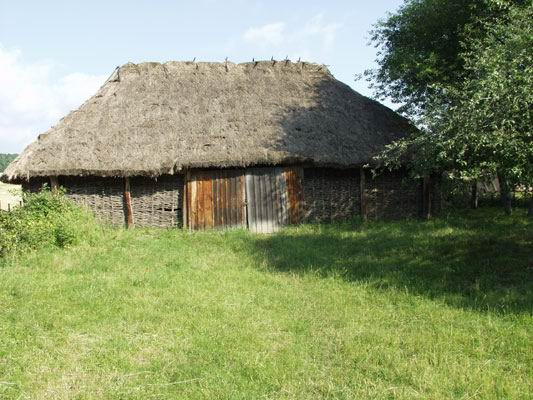
4. Хлів. Середина ХХ ст. с. Рижки Чернігівської обл. МНАПУ. с. Пирогів.
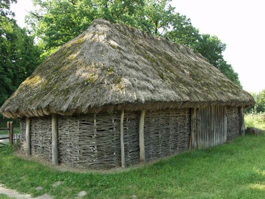
5. Хата із с. Бехи Коростенського р-ну Житомирської обл. Кінець XVIII ст. початок ХІХ ст. МНАПУ. с. Пирогів.
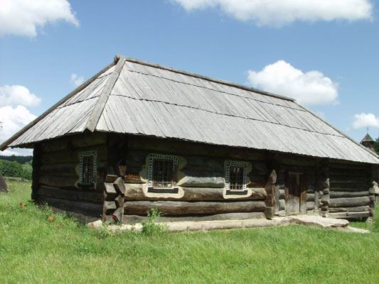
6. Вулики.
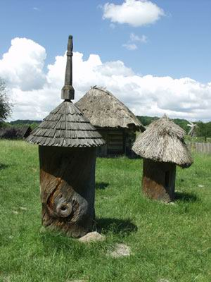
7. Сипанка.
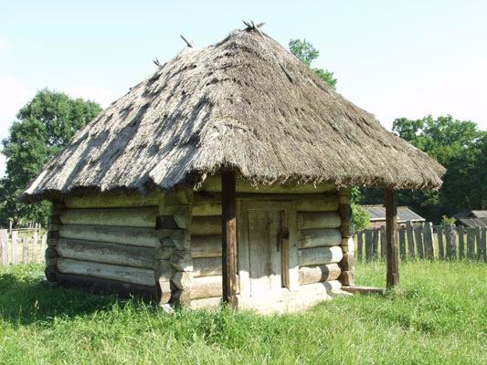
8. Церква. 1789 р. с. Кисоричі Рівненської обл. МНАПУ. с. Пирогів.
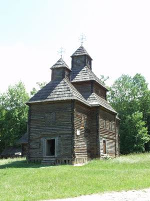
9. Хата. с. Гажене Гомельської обл. МНАПУ. с. Пирогів.
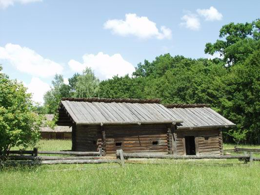
10. Хата. ХІХ ст. с. Микульчиці Рівненської обл. МНАПУ. с. Пирогів.
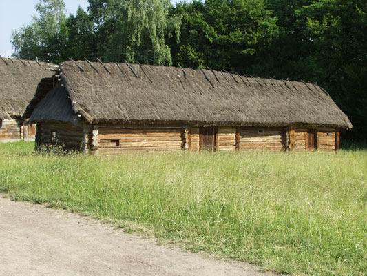
11. Кузня. 1905 р. с. Залютня Волинскої обл. МНАПУ. с. Пирогів.
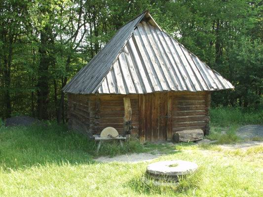
12. Хата. ХІХ ст. с. Полиці Волинської обл. МНАПУ. с. Пирогів.
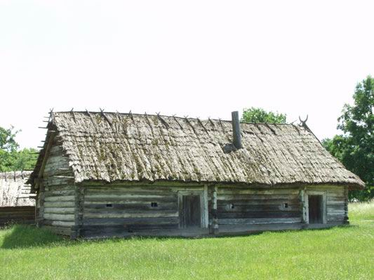
13. Хата. 1587 р. с. Самари Волинської обл. МНАПУ. с. Пирогів.
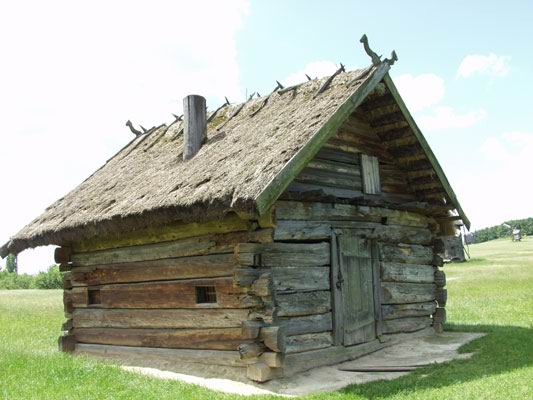
14. Клуня. ХІХ ст. с. Видраниця Волинської обл. МНАПУ. с. Пирогів.
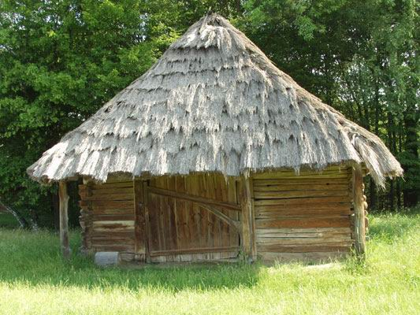
15. Садиба заможного селянина із Волинського Полісся. ("Окружний двір"). 2-га половина ХІХ-го ст. с. Солов'ї Старовижівського р-ну Волинської обл. МНАПУ. с. Пирогів.
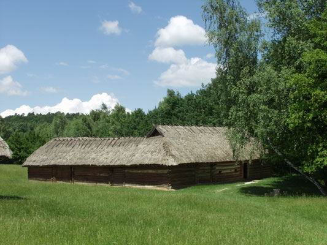
16. Вітряк. Кінець ХІХ ст. с. Смолин Чернігівської обл. МНАПУ. с. Пирогів.
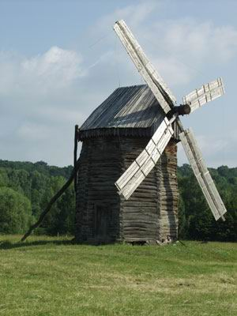
17. Вітряк. Кінець ХІХ ст. с. Ширяєва Сумської обл. МНАПУ. с. Пирогів.
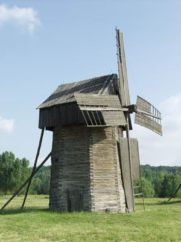
18. Вітряк. Кінець ХІХ ст. с. Юнаківка Сумської обл. МНАПУ. с. Пирогів.
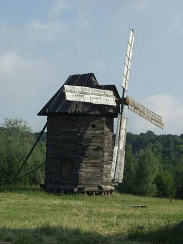
19. Вітряк. Полісся. МНАПУ. с. Пирогів.
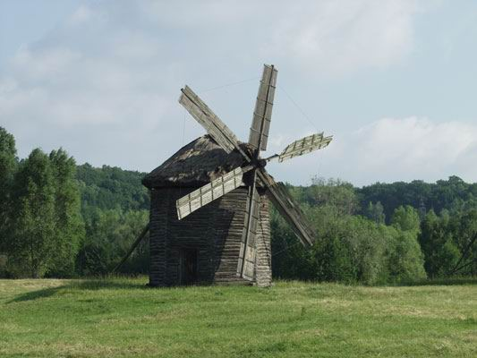
20. Вітряк. Полісся. МНАПУ. с. Пирогів.
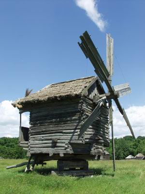
21. Образцы крестьянских жилищ в уездах Киевском, Васильковском, Радомысльском, Овручском и прочих. Д.П. Де ля Фліз. Альбоми. Серія "Етнографічно-фольклорна". - Київ, 1996. - Т.1. - С.35.
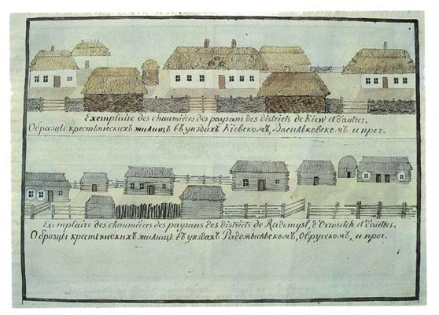
22. Внутренности крестьянской избы в Киевском, Васильковском и Радомысльском уездах. Д.П. Де ля Фліз. Альбоми. Серія "Етнографічно-фольклорна". - Київ, 1996. - Т.1. - С.36.
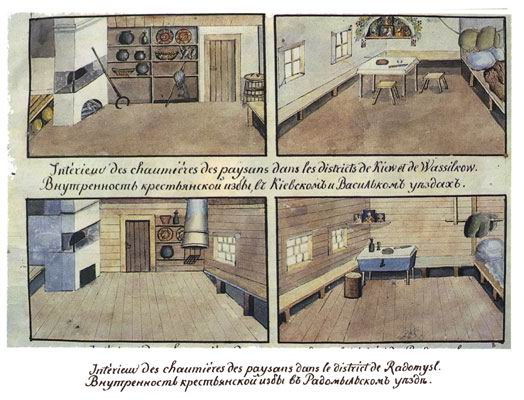
23. Мешканці Єрчикського товариства. Д.П. Де ля Фліз. Альбоми. Серія "Етнографічно-фольклорна". - Київ, 1996. - Т.1. - С.219.
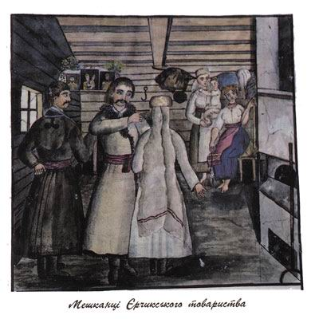
24. Мешканці Старо-Петрівського товариства. Д.П. Де ля Фліз. Альбоми. Серія "Етнографічно-фольклорна". - Київ, 1996. - Т.1. - С.242.
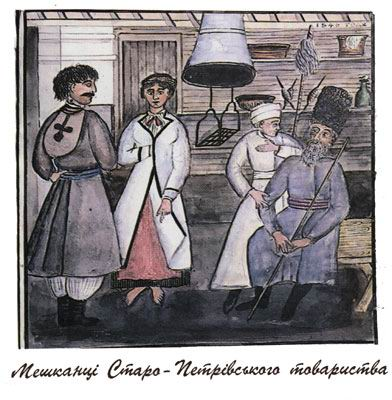
25. С.Хотюжанка. Нині - с. Катюжанка Вишгородського р-ну Київської обл. (4490). Вперше згадується в історичних документах XVІІ ст. За переказами, Катюжанку заснували вихідці з Димера на чолі з Катюгою. Як маєток Димерського староства, Катюжанку на початку ХІХ ст. було передано до казни. Парафіяльну дерев'яну Михайлівську церкву було збудовано в другій половині XVII ст. Д.П. Де ля Фліз. Альбоми. Серія "Етнографічно-фольклорна спадщина". - Київ, 1996. - Т.2. - С.415.
. Вперше згадується в історичних документах XVІІ ст. За переказами, Катюжанку заснували вихідці з Димера на чолі з Катюгою. Як маєток Димерського староства, Катюжанку на початку ХІХ ст. було передано до казни. Парафіяльну дерев'яну Михайлівську церкву було збудовано в другій половині XVII ст. Д.П. Де ля Фліз. Альбоми. Серія")
26. Гута Хотюжанская. Нині - с. Гута Катюжанська Вишгородського р-ну Київської обл. (131). Гута Катюжанська до початку ХІХ ст. входила до Димерського староства, а внаслідок конфіскації старостинських земель стала державним селом. Парафіяни села в середині ХІХ ст. належали до Михайлівської церкви у Катюжанці. Д.П. Де ля Фліз. Альбоми. Серія "Етнографічно-фольклорна спадщина". - Київ, 1996. - Т.2. - С.417.
. Гута Катюжанська до початку ХІХ ст. входила до Димерського староства, а внаслідок конфіскації старостинських земель стала державним селом. Парафіяни села в середині ХІХ ст. належали до Михайлівської церкви у Катюжанці. Д.П. Де ля Фліз. Альбоми. Серія")
27. Рудня Хотюжанская. Нині - с. Рудня Димерська Вишгородського р-ну Київської обл. (333). Село засновано біля рудні, розташованої у ХVI - ХVIІ ст. на одному з островів річки Здвиж поблизу сучасного села. Рудня Димерська до початку ХІХ ст. входила до Димерського староства, а згодом внаслідок конфіскації старостинських земель стала державним селом. Парафіяни Рудні Димерської в середині ХІХ ст. належали до Михайлівської церкви у Катюжанці. Д.П. Де ля Фліз. Альбоми. Серія "Етнографічно-фольклорна спадщина". - Київ, 1996. - Т.2. - С.419.
. Село засновано біля рудні, розташованої у ХVI - ХVIІ ст. на одному з островів річки Здвиж поблизу сучасного села. Рудня Димерська до початку ХІХ ст. входила до Димерського староства, а згодом внаслідок конфіскації старостинських земель стала державним селом. Парафіяни Рудні Димерської в середині ХІХ ст. належали до Михайлівської церкви у Катюжанці. Д.П. Де ля Фліз. Альбоми. Серія")
28. М. Чорнобиль. Пригород Юридики. Чорнобиль до аварії 1986 року на ЧАЕС - районний центр одноіменного району (12300). Юридиками звалися в західних губерніях Російської імперії маєтки, що належали католицьким костелам. Були передані до фонду державного майна у 1843 році. Як поселення, згадується у літописах під 1193 р. (Літопис Руський. - с. 353). 1793 р. Чорнобиль увійшов до складу Російської імперії. На середину ХІХ ст. тут існували три дерев'яні православні церкви. Микільська та Богородицька згоріли під час пожежі 1849 р. Відбудовано згодом лише Микільську, яку було освячено 1858 р. Іллінську церкву побудовано на місці раніше існуючої в 1779 р. У Чорнобилі існувала також церква старовірів, але 1852 р. її розібрали , частину будівельного матеріалу було використано на відбудову Микільської церкви. У містечку були також кам'яний католицький костьол і п'ять єврейських синагог. Д.П. Де ля Фліз. Альбоми. Серія "Етнографічно-фольклорна спадщина". - Київ, 1996. - Т.2. - С.431.
![28. М. Чорнобиль. Пригород Юридики. Чорнобиль до аварії 1986 року на ЧАЕС - районний центр одноіменного району (12300). Юридиками звалися в західних губерніях Російської імперії маєтки, що належали католицьким костелам. Були передані до фонду державного майна у 1843 році. Як поселення, згадується у літописах під 1193 р. (Літопис Руський. - с. 353). 1793 р. Чорнобиль увійшов до складу Російської імперії. На середину ХІХ ст. тут існували три дерев'яні православні церкви. Микільська та Богородицька згоріли під час пожежі 1849 р. Відбудовано згодом лише Микільську, яку було освячено 1858 р. Іллінську церкву побудовано на місці раніше існуючої в 1779 р. У Чорнобилі існувала також церква старовірів, але 1852 р. її розібрали , частину будівельного матеріалу було використано на відбудову Микільської церкви. У містечку були також кам'яний католицький костьол і п'ять єврейських синагог. Д.П. Де ля Фліз. Альбоми. Серія](pol_arh_files/028.jpg "28. М. Чорнобиль. Пригород Юридики. Чорнобиль до аварії 1986 року на ЧАЕС - районний центр одноіменного району (12300). Юридиками звалися в західних губерніях Російської імперії маєтки, що належали католицьким костелам. Були передані до фонду державного майна у 1843 році. Як поселення, згадується у літописах під 1193 р. (Літопис Руський. - с. 353). 1793 р. Чорнобиль увійшов до складу Російської імперії. На середину ХІХ ст. тут існували три дерев'яні православні церкви. Микільська та Богородицька згоріли під час пожежі 1849 р. Відбудовано згодом лише Микільську, яку було освячено 1858 р. Іллінську церкву побудовано на місці раніше існуючої в 1779 р. У Чорнобилі існувала також церква старовірів, але 1852 р. її розібрали , частину будівельного матеріалу було використано на відбудову Микільської церкви. У містечку були також кам'яний католицький костьол і п'ять єврейських синагог. Д.П. Де ля Фліз. Альбоми. Серія")
29. С. Денисовичі. Нині - с. Денисовичі Поліського р-ну Київської обл. (301) відселене у зв'язку з аварією на ЧАЕС 1986 р. Це найпівнічніше село Київської губ. (а нині - і Київської області), до 1832 р. входило до Шепелицького маєтку овруцького Василіанського монастиря, згодом було передано до казни. Дерев'яну парафіяльну Воздвиженську церкву збудовано у 1762 р. Д.П. Де ля Фліз. Альбоми. Серія "Етнографічно-фольклорна спадщина". - Київ, 1996. - Т.2. - С.449.
 відселене у зв'язку з аварією на ЧАЕС 1986 р. Це найпівнічніше село Київської губ. (а нині - і Київської області), до 1832 р. входило до Шепелицького маєтку овруцького Василіанського монастиря, згодом було передано до казни. Дерев'яну парафіяльну Воздвиженську церкву збудовано у 1762 р. Д.П. Де ля Фліз. Альбоми. Серія")
30. С. Мартиновичі. Нині - с. Мартиновичі Подільського р-ну Київської обл. (1128). За планом ліквідації наслідків аварії на ЧАЕС село підлягає відселенню. В історичних документах Мартиновичі до 1832 р. належали землевласникові Станіславу Стецькому, в якого були конфісковані за участь у польському повстанні і передані до державних володінь. Дерев'яну парафіяльну Георгіївську церкву збудовано 1778р. Д.П. Де ля Фліз. Альбоми. Серія "Етнографічно-фольклорна спадщина". - Київ, 1996. - Т.2. - С.459.
. За планом ліквідації наслідків аварії на ЧАЕС село підлягає відселенню. В історичних документах Мартиновичі до 1832 р. належали землевласникові Станіславу Стецькому, в якого були конфісковані за участь у польському повстанні і передані до державних володінь. Дерев'яну парафіяльну Георгіївську церкву збудовано 1778р. Д.П. Де ля Фліз. Альбоми. Серія")
31. Рудня Шерневская. Нині у складі с. Шершні. Д.П. Де ля Фліз. Альбоми. Серія "Етнографічно-фольклорна спадщина". - Київ, 1996. - Т.2. - С.517.
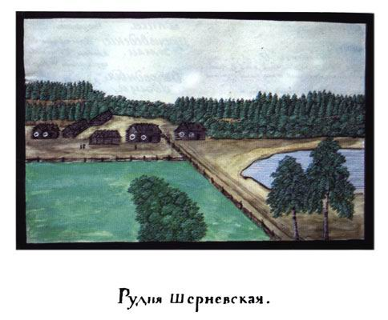
32. Д. Коморовка. Нині - с. Комарівка Макарівського р-ну Київської обл. (692). Після приєднання до Російської імперії наприкінці XVIII ст. земель, що належали Польщі, Комарівка у складі Рожівського староства увійшла до державних володінь. Парафіяни Комарівки в середині ХІХ ст. були приписані до Микільської церкви у Небелицях. Д.П. Де ля Фліз. Альбоми. Серія "Етнографічно-фольклорна спадщина". - Київ, 1996. - Т.2. - С.541.
. Після приєднання до Російської імперії наприкінці XVIII ст. земель, що належали Польщі, Комарівка у складі Рожівського староства увійшла до державних володінь. Парафіяни Комарівки в середині ХІХ ст. були приписані до Микільської церкви у Небелицях. Д.П. Де ля Фліз. Альбоми. Серія")
33. Гута Коморовская. Нині - у складі села Комарівка. Після приєднання до Російської імперії наприкінці XVIII ст. польських земель, Гута Комарівська у складі Рожівського староства увійшла до державних володінь. Парафіяни села в середині ХІХ ст. належали до Микільської церкви в Небелиці. Д.П. Де ля Фліз. Альбоми. Серія "Етнографічно-фольклорна спадщина". - Київ, 1996. - Т.2. - С.545.

34. С. Коленці. Нині - с. Коленці Іванківського р-ну Київської обл. (496). Коленці здавна належали до митрополичих володінь, а згодом - різним приватним власникам. Коленці конфісковано 1849 р. в останнього власника - Ксаверія Браницького. Дерев'яну парафіяльну Козьмодем'янську церкву збудовано 1752 р. на місці раніше існуючої. Д.П. Де ля Фліз. Альбоми. Серія "Етнографічно-фольклорна спадщина". - Київ, 1996. - Т.2. - С.549.
. Коленці здавна належали до митрополичих володінь, а згодом - різним приватним власникам. Коленці конфісковано 1849 р. в останнього власника - Ксаверія Браницького. Дерев'яну парафіяльну Козьмодем'янську церкву збудовано 1752 р. на місці раніше існуючої. Д.П. Де ля Фліз. Альбоми. Серія")
35. Д. Шпили. Нині - с. Шпилі Іванківського р-ну Київської обл. (1003). В середині ХІХ ст. парафіяни Шпилів належали до Козьмодем'янської церкви в Коленцях. Д.П. Де ля Фліз. Альбоми. Серія "Етнографічно-фольклорна спадщина". - Київ, 1996. - Т.2. - С.557.
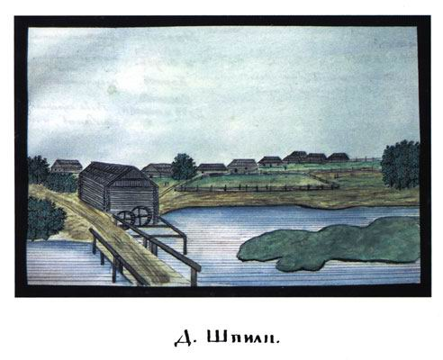
36. Млини Полісся.
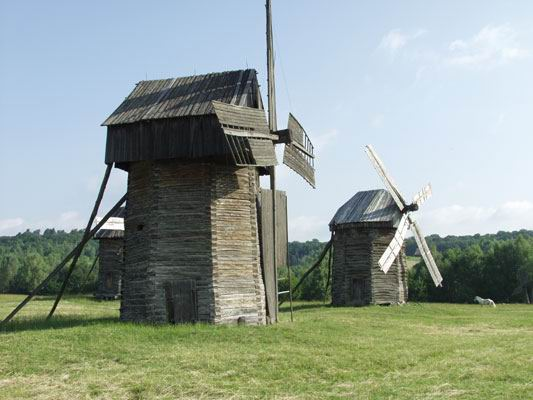
37. Млини Полісся.
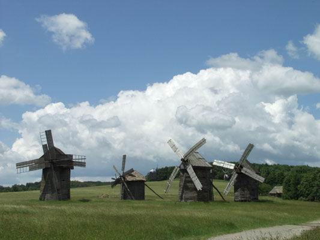
38. Хати Полісся.
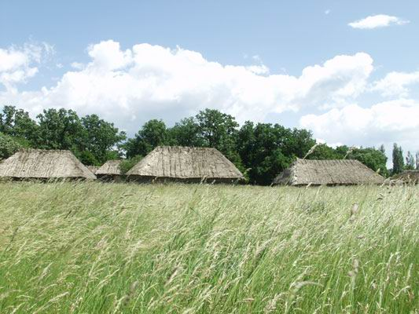
Література
1. Д.П. Де ля Фліз. Альбоми: Серія "Етнографічно-фольклорна". - К.,1996. - Т.1. - С.29-36, 219, 239, 242-243.
2. Д.П. Де ля Фліз. Альбоми: Серія "Етнографічно-фольклорна спадщина". - К.,1999. - Т.2. - С.415-529, 539-559.
3. Маркович Я. Записки о Малороссии, ея жителях и произведениях. - Спб., 1798. - С.64-68.
4. Фундуклей И. Статистическое описание Киевской губернии. - Спб., 1852. - С.266-285.
5. Шафонский А. Черниговского наместничества топографическое описание Малыя России, из частей коей оное наместничество составлено, с 4-мя географическими картами. - К., 1851. - Гл.2. - С.207-308; Ч. 2, Гл.3. - С.326, 332-334.
6. Шейн П. Женитьба комина // Этнографическое обозрение. - 1898. - Т.33. - №3. - С.152-160.
7. Могильченко М. Деревенские сооружения в Черниговской губернии // Материалы украинской этнологии. - 1899. - Т.1. - С.79-95.
8. Данилюк А. Релікти давнього будівництва. - Рівне, 1995.
9. Данилюк А. Замкнені двори на Поліссі // НТЕ. - 1975. - № 4. - С.102-103.
10. Данилюк А. Особливості розвитку традиційного житла Волинського Полісся // НТЕ. - 1977. - № 1. - С.50-56.
11. Приходько М. Особливості сільського житла на Поліссі // НТЕ. - 1970. - №6. - С.50-54.
12. Таранушенко С. Давнє поліське житло // НТЕ. - 1962. - № 1. - С.8-23.
13. Таранушенко С. Клуні українського Полісся // НТЕ. - 1968. - № 3. - С.60-64.
14. Козакевич М. Селянська садиба на українському Поліссі (в другій половині ХІХ і першій половині ХХ ст.) // Матеріали з етнографії та мистецтвознавства. - К.,1959. - Вип.5. - С.9-25.
15. Ременяка О. Дерев'яна архітектура волинського Полісся // Полісся: мова, культура, історія. - К.,1996. - С.328-333.
16. Радович Р. Техніка та технологія традиційного житлово-господарського будівництва на Поліссі другої половини ХІХ - першої половини ХХ ст. // Полісся України: матеріали історико-етнографічного дослідження. Вип.1. Київське Полісся. 1994. - Львів, 1997. - С.62-82.
17. Радович Р. Релікти архаїчного поліського житла. // Полісся України: матеріали історико-етнографічного дослідження. - Вип.2: Овруччина 1995. - Львів, 1999. - С.87-98.
18. Радович Р. Технологія зведення зрубу житла (ХІХ - початок ХХст.) // Полісся України: матеріали історико-етнографічного дослідження. Вип.2: Овруччина 1995. - Львів, 1999. - С.99-116.
19. Сілецький Р. "Закладщина" хати на Поліссі: Обрядово-звичаєвий аспект // Полісся України: матеріали історико-етнографічного дослідження. Вип.1: Київське Полісся 1994. - Львів, 1997. - С.83-96.
20. Тарас Я. Церковне будівництво // Полісся України: матеріали історико-етнографічного дослідження. - Вип.2: Овруччина 1995. - Львів, 1999. - С.141-158.
21. Косміна Т. Традиції та інновації в архітектурі народного житла Києва та Київщини // Етнографія Києва та Київщини: Традиції і сучасність. - К., 1986. - С.157-200.
22. Космина Т. Украинцы: Жилище // Этнография восточных славян. - М., 1987. - С. 101-146.
23. Косміна Т. Поселення, садиба, житло // Українці: Історико-етнографічна монографія у 2-х книгах. - Опішне, 1999. - Книга 2. - С.13-56.
За матеріалами:
http://www.ukrfolk.kiev.ua/polissya/